ورشة حسن دياب أبو زيد
إصلاح محركات الغسالات والدينامو ومحركات مضخات المياه في اللاذقية.
0932773083
خدماتنا
- محركات الغسالاتفحص وإصلاح محركات الغسالات.
- محركات 3 فازفحص وإصلاح محركات 3 فاز.
- محركات مصاعد فحص وإصلاح محركات مصاعد.
- محركات مضخات المياهفحص وإصلاح محركات مضخات المياه.
يتوفر قطع تبديل وقطع غيار لجميع المحركات.
معرض أعمالنا
أعمالنا
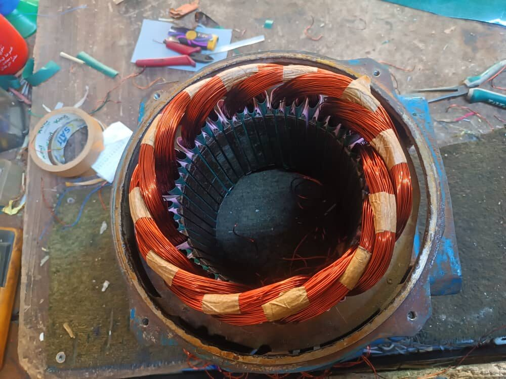
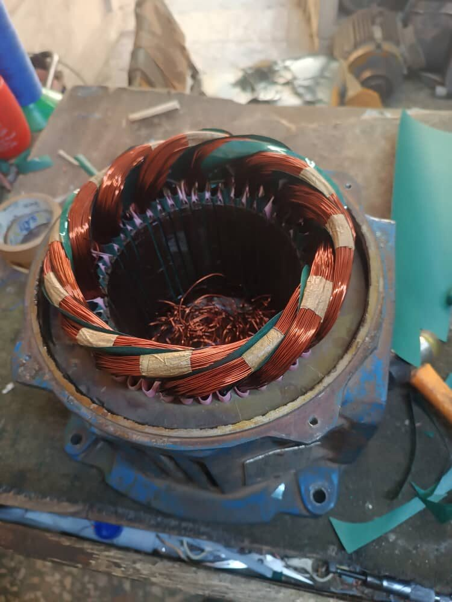
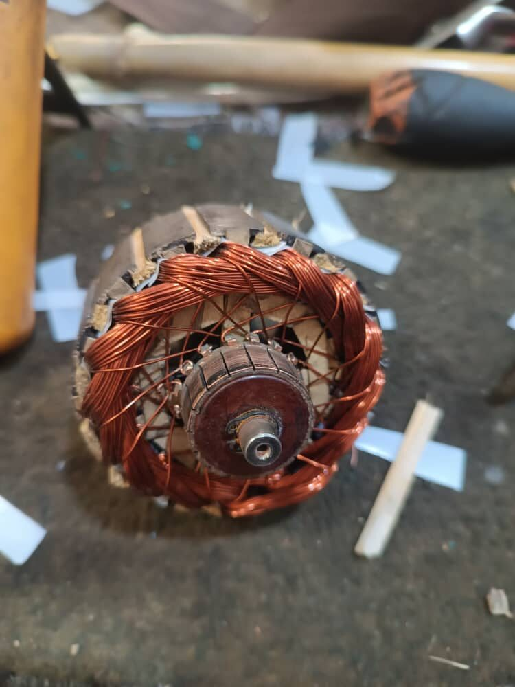
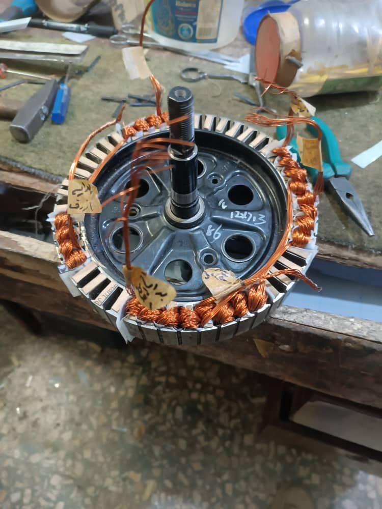
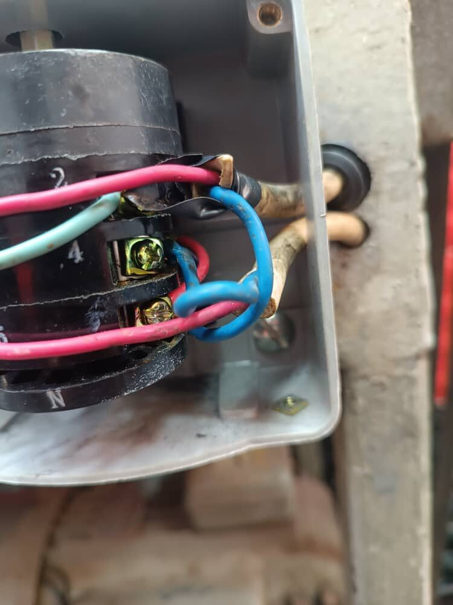
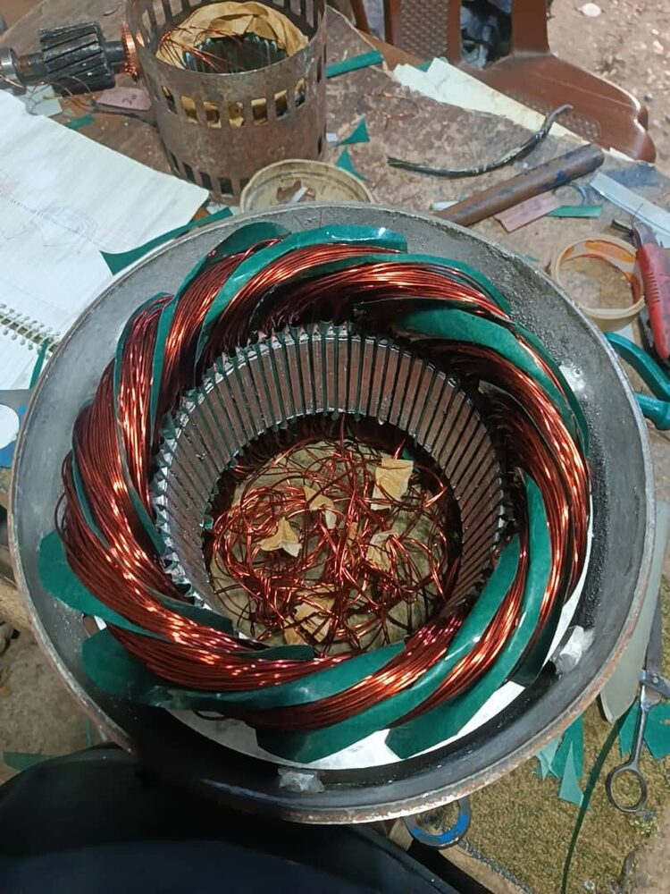
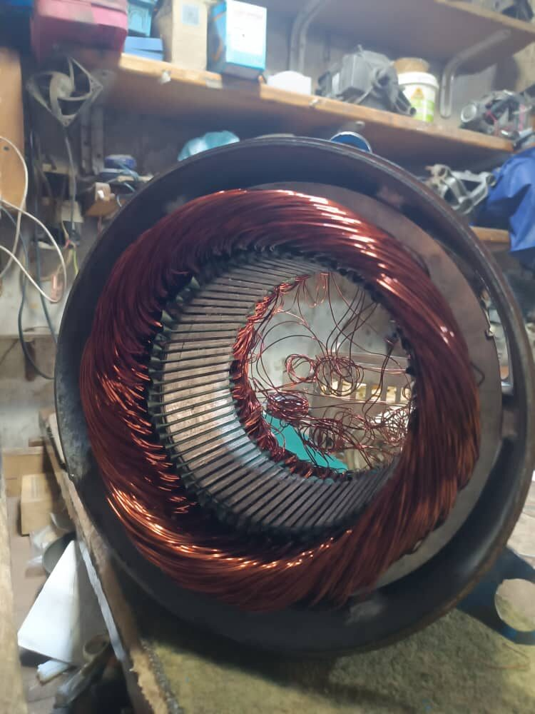
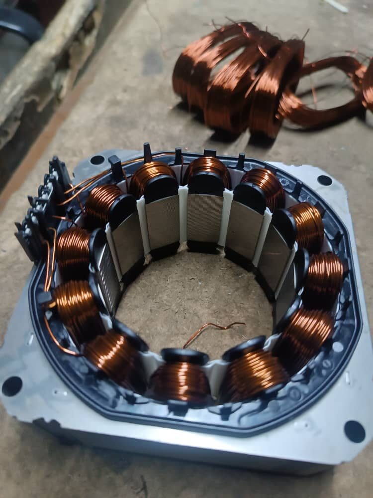
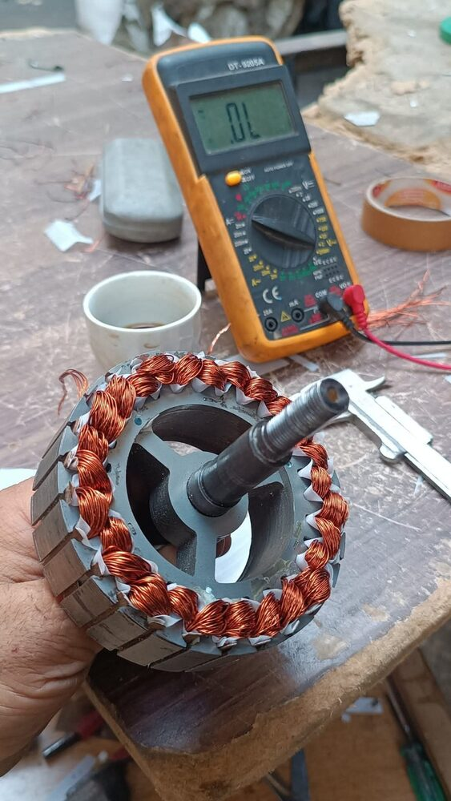
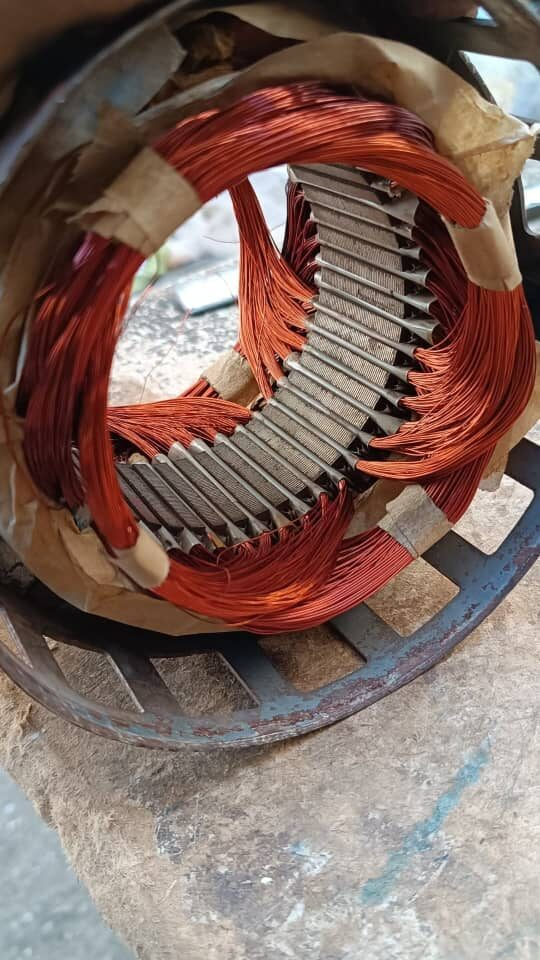
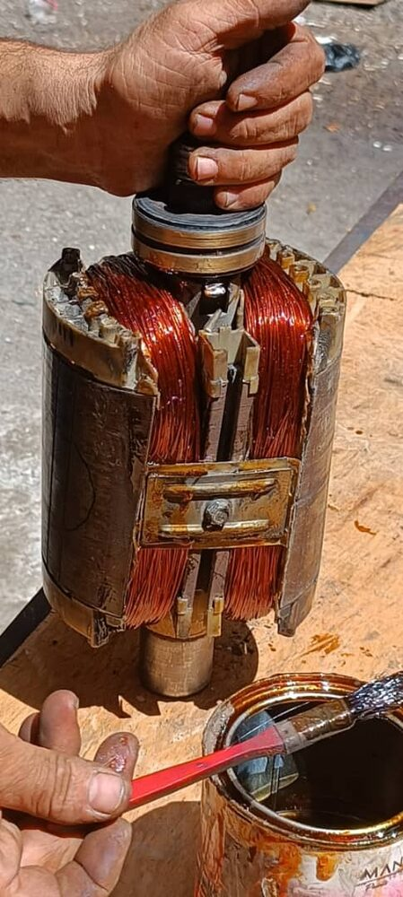
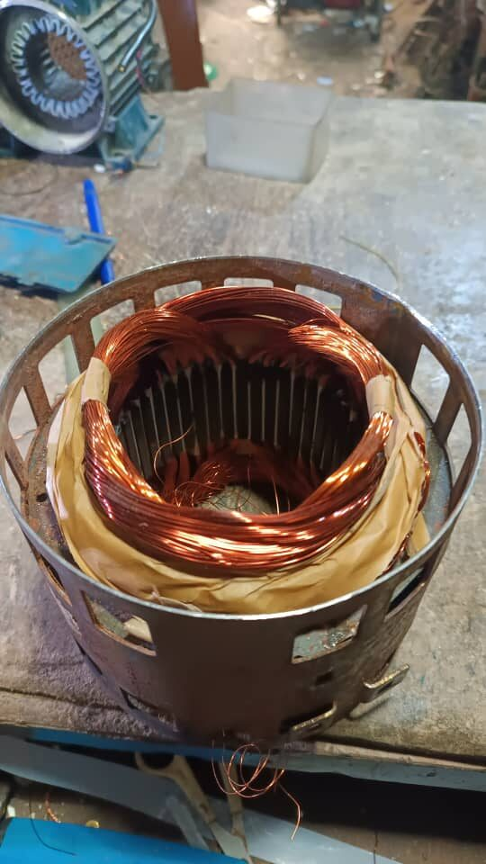
صور من شغل الورشة: لف ملفات المحركات وتوصيلها.
صور أخرى
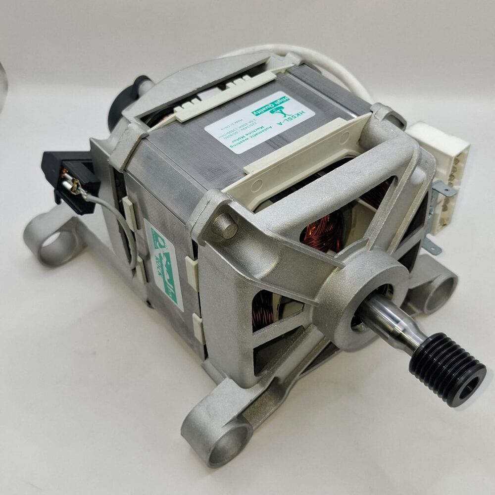
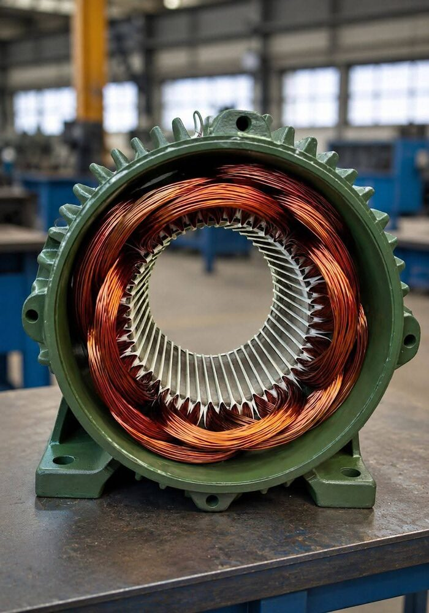
العنوان
- المدينة
- اللاذقية
- الحي
- حي الصليبة
- الموقع
- ساحة العيد، مقابل حلويات الاختيار
- الهاتف
- 0932773083
الموقع على الخريطة
ساحة العيد، حي الصليبة، مقابل حلويات الاختيار، اللاذقية.